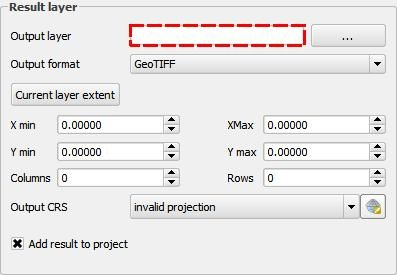

Instructions to write new lessons are described in this document.
The recommended procedure for adding new lessons is as follows:
All these elements are explained in a later section in this document.
try:
from lessons import addLessonModule
addLessonModule(lesson_module)
except:
pass
Replace lesson_module with the reference to your lesson module (which you should have imported), and add as many entries as module you have created in your set of lessons.
An example of a plugin that adds a collection of lessons can be found in the `lessonscollectionplugin` folder of this repository. Use is as a template for you own collections. If using it, you do not have to manually call the `addLessonModule` method. The plugin will automatically discover all available lessons. The only thing you have to do is to add your lessons under the `lessons` subfolder, each of them in its corresponding subfolder, as described above.
If you have created a folder for each lesson as described above, the steps of the lesson and the content of each step should be defined in the `__init__.py` file.
Create a `Lesson` object, specifying its name, the group it belongs to (lessons can be grouped) and a detailed description.
lesson = Lesson ("Interpolating from a points layer", "Analysis lessons"
"this lessons shows how to use the interpolation capabilities of QGIS")
Instead of a string with the description, you can pass the name of an HTML file containing a richer description. For instance:
lesson = Lesson ("Interpolating from a points layer", "Analysis lessons"
"lesson.html")
There is no need to add the full path to the file, as long as the file is in the same folder as the `__init__.py` file. The full path will be correctly resolved at runtime.
If your lesson requires loading data into QGIS, you can prepare a project with that data. Name the project ``project.qgs```and put it in the lesson folder as well, as indicated. This will cause the lesson to automatically have a first step that loads the data before starting with the rest of step. If you want your data to be loaded from a different project in another folder, or to load it not at the beginning of the lesson, you will have to manually add that step.
Now you can add steps to your lesson using the `addStep` method, which has the following signature:
addStep(self, name, description, function=None, prestep=None, endsignal=None,
endsignalcheck=None, endcheck=lambda:True, steptype=1):
Here is a description of its arguments:
To make it easier to create new lessons, you will find some convenience methods in the `Lesson` class and functions for performing common tasks in the lessons.utils module.
The addMenuClickStep() method in the ```Lesson```class will add step that involves clicking on a menu item. Its only argument is the name of the menu to click. This method will add a step that unfold the specified menu and highlights the corresponding menu item, and that will automatically move to the next step once that menu item is clicked.
The help files associated with a lesson contain text and usually screenshots. These have to be created manually, by creating the corresponding html and image files.
An additional plugin is included in this repository, in the `lessonscreator` folder, aimed at users that plan to create their own lessons. It simplifies both writing text and creating screenshots, by capturing actions performed in QGIS. That is, the user performs the steps in the lesson to create, and the plugin tries to automatically create the corresponding lesson files.
To create a new lesson, select the Plugins/Lessons/Cature lesson steps menu. Select a folder to store the lessons data.
From that moment, the plugin will be listening to your actions and documenting them according to the following ideas:
Whenever the focus changes to a new window, a screenshot of the window will be taken. An entry in the html file describing the current step will be added, which will include the screenshot.
Whenever the focus changes between two elements (but both of them having the same parent window/dialog), and the one that receives the focus is an input widget (text box, dropdown list, etc), a screenshot of the new element that receives the focus will be taken. The element that receives the focus will be highlighted in the screenshot using a red dashed rectangle, as shown in the image below
The image will be added to the html corresponding to the current step, along with a text entry in the form “Click on [widget_name]”
When edit widgets lose focus or are modified, the plugin will try to capture the user action. For instance, for a dropdown list, when the current value is changed, the text “Select [new_value_text] in the [dropdown_name] dropdown list” is added. In the case of text boxes, the text “Enter [text] in the [textbox_name] textbox” is added.
When a menu item is clicked, the text “Select the [menu_text] menu” will be added.
All texts snippets and screenshots are added to the html file that describes the current step. A lesson might contain several steps. To start a new step and add text and screenshots to another file, press CTRL-W at anytime, and a new step will be started.
When you have captured all elements of you lesson, select the Plugins/Lessons/Stop capturing lesson steps menu.
In the folder that you selected, you will find all html files and image files. You will also find a `___init.py___` file that describe the lesson. The folder as it is generated can be added to your lessons plugin (created based on the `lessonscollectionplugin` template) and will be recognised as a valid lesson.